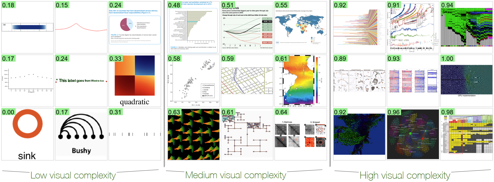

What Makes a Visualization Image Complex?

Venue. TVCG (2026)
Abstract. We investigate the perceived visual complexity (VC) in data visualizations using objective image-based metrics. We collected VC scores through a large-scale crowdsourcing experiment involving 349 participants and 1,800 visualization images. We then examined how these scores align with 12 image-based metrics spanning pixel-based and statistic-information-theoretic (clutter), color, shape, and our two new object-based metrics (meaningful-color-count (MeC) and text-to-ink ratio (TiR)). Our results show that both low-level edges and high-level elements affect perceived VC in visualization images; the number of corners and distinct colors are robust metrics across visualizations. Second, feature congestion, a statistical information-theoretic metric capturing color and texture patterns, is the strongest predictor of perceived complexity in visualizations rich in the same continuous color/texture stimuli; edge density effectively explains VC in node-link diagrams. Additionally, we observe a bell-curve effect for texts: increasing TiR initially reduces complexity, reaching an optimal point, beyond which further text increases VC. Our quantification model is also interpretable—enabling metric-based explanations—grounded in the VisComplexity2K dataset, bridging computational metrics with human perceptual responses. The preregistration is available at osf.io/5xe8a. osf.io/bdet6 has the dataset and analysis code.
Link to this page: